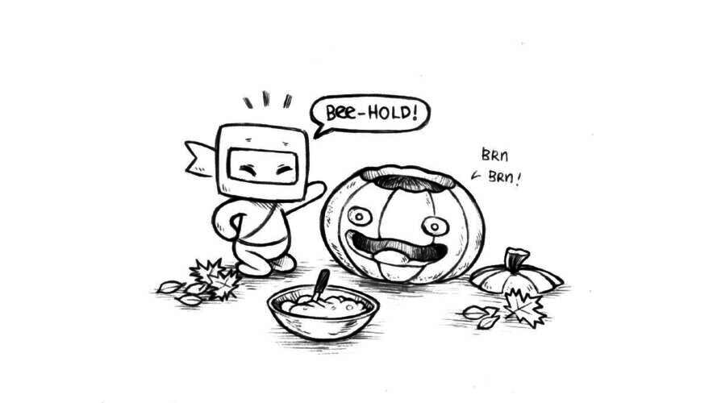
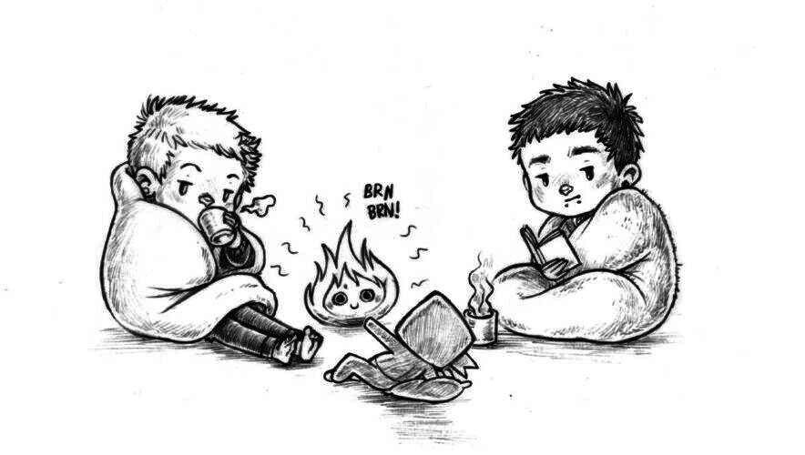
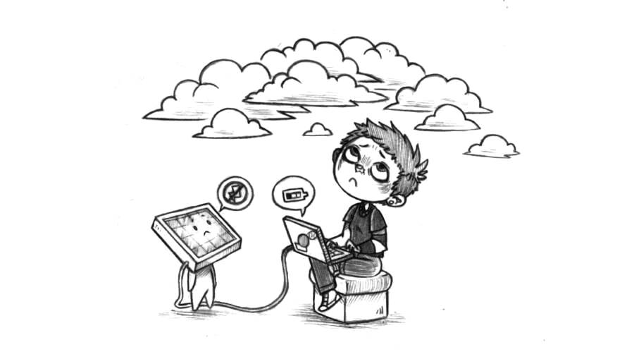
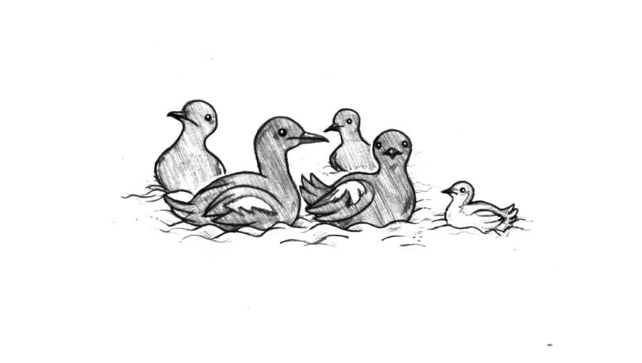

home

log
Receive monthly updates via our RSS feed, or by signing up to our newsletter.
2024
November 2024
- colating -
- 100r.co, added Week 6 to the Victoria to Sitka Logbook.
- Rabbit Waves, added a page on Morse Code and on Morse Code with flags.
A couple of folks on Merveilles got together and made a Diablo Tribute tape, there will be actual cassettes available of it in a bit, but in the meantime, here's a rip of the audio(YouTube)!
Next month on December 6th, Devine will share the stage with Iszoloscope, Oddie(Orphx) & Creature at Foufounes Electriques in Montréal as part of AMP Industrial Events. Then on the 7th, we will both(remotely) present a summary of all the interesting analog communication schemes that inspired and found their way into Rabbit Waves and Wiktopher for Iterations 2024 organized by Creative Coding Utrecht.
October 2024
- 100r.co, added rabbit waves and logbooks. Updated woodstove installation, no windlass with 1 photo, mini dodger and victoria to sitka logbook with Week 3 and 4.
Pino is back in Victoria. Being back in a city also means that we are shipping sticker sheets again! Devine found a spirograph set at a thrift store for 5$, we now make patterns on every letter we ship.
{kind=link}
We are happy to announce the official release of Rabbit Waves! The idea for the project came after discussing the disappearance of certain traditional seasteading skills and maritime communication knowledge that we believe are valuable when electronics misbehave, but that are also just generally fun to learn and use. The world of the micro-site will grow as we think of new ideas to expand it.
Devine participated in Drawtober again this year and completed a zine that teaches the basics of multiset rewriting with examples, it also includes the source for a tiny Fractran interpreter. Since its release, many people have printed their own. Avanier went a step further and re-drew the zine on black paper! Devine also released an interactive version, and CapitalEx created with it a beautiful little world to explore! Handmade Seattle 2024 is coming up, Devine will be there to talk about weird computer stuff, and will hand out copies of the zine too.
This year, we carved a Calcifer pumpkin (see our other halloween pumpkins).
Book Club: This month we read The Memoirs of Sherlock Holmes by Arthur Conan Doyle.
September 2024
- 100r.co, added a new page: Victoria to Sitka logbook.
- M291, added support for Cyrillic glyphs.
- Fractran, released what might be the most in-depth documentation of Conway's programming language out there.
- Now Lie In It, a look back at what has happened with Uxn since its creation 4 years ago.
September has been cold and stormy, we spent lots of time sitting by the woodstove drinking tea. As promised, we have begun transcribing the Victoria to Sitka logbook digitally, we release one week's worth of logs at a time. We populated the logs with photos and Rek's sketches(also sourced from the handwritten logbook). End of the month, we closed our summer 2024 sailing route, Pino has traveled very far this year! We made 76(!!!) stops over a period of 5 months, sailing 1900 NM.
We announced a new project this month named Rabbit Waves. It will serve as a vessel to expand, in a playful way, on some of our favourite things. Expect lots of art featuring root vegetable root-shaped sailboats, rabbits, and seabirds! The website will host more content next month.
For 3 years now, we've had a monthly hand-drawn calendar in the galley that we cover with doodles, at the end of the year, Rek binds the 12 pages together, and it makes it easy to look back at where we were, what we were doing at a previous time. Everyday has some kind of highlight or other. It's one of our favourite habits.
{kind=link}
Listen to Devine's remix of SOPHIE's One More Time feat. Popstar.
Book Club: This month we read Project Hail Mary by Andy Weir. We are forever in love with Rocky.
August 2024
- 100r.co, added new pages: Sointula, Johnstone strait anchorages, and Central coast anchorages. Updated existing pages: added Yuculta and Dent rapids with southbound tactics, no windlass with 3 new photos, lpg with troubleshooting, and gimballed stove with performance tests.
- Left, added support for macros.
- Uxnfor, added support for macros.
- Uxn, found a tiny optimization that makes things a bit faster.
- M291, started a little music player for Uxn11.
- Wiktopher, updated some Solresol words in the Ilken songs featured in the book.
- Hakum, added a new comic named Smile.
- Wunderland Rabbits, added a new rabbit pic.
This month, Pino reached the northern tip of Vancouver Island, sailed south through Johnstone Strait, and into calmer, familiar waters on the 11th of August. Both of us were eager for a taste of summer weather, we hoped to catch what was left of it. Our legs demanded an anchorage with options for walking, so we chose to anchor in Hathayim Marine Park. The lovely people on the sailboat Nanamuk were anchored here too, they mapped many of the trails in the area, even the overgrown, less-traveled routes. We updated our summer route map through northern B.C.
From May 1st to August 11th, like with our book Busy Doing Nothing, Rek kept a detailed logbook of daily happenings onboard. We hope to publish these notes to this wiki soon.
Book Club: This month we are reading The Adventures of Sherlock Holmes by Arthur Conan Doyle, The Design of Everyday Things by Don Norman, and Everyday Utopia: What 2000 years of Wild Experiments Can Teach Us About the Good Life by Kristen R. Ghodsee.
July 2024
- 100r.co, added Sitka, and completed route in us se alaska.
- Left, can now paste binary directly from programs like Nasu.
- Hakum, added two drawings to the Characters section, and a new very short comic called Shoes.
- Wiktopher, fixe typos.
- Markl, we don't have much of anything to show for it yet, but who knows, maybe this time it will work out!
- Solrela, expanded Solresol dictionary.
- Malleable Systems, wrote a little thing about extending compiled software with devtools.
Pino and crew have moved a lot in the past month. On the first of July, we were in Sitka, Southeast Alaska, and then on the last day of the month we were back in Millbrook Cove, very near to the top of Vancouver Island. We sailed 590 NM and stopped in 15 different anchorages.
Leaving Sitka, we sailed along the west coast of Southeast Alaska for a few days to try and take advantage of a good weather window, we had some engine issues which too motivated the need for such a long passage(see our track)—we spent two days troubleshooting the issue while anchored in Port Bazan, a bay far from everything, with no internet connection or way to talk to anybody, we were glad to have the physical engine manual on board. Sailing on open waters is always nice, we saw black-footed albatrosses, horned puffins, a whale per hour, and many more sea otters(Port Bazan was full of them).
After checking back into Prince Rupert, the way back south through Northern Canada was plagued with unfavorable winds, we had to beat into it, or travel on quiet waters to make progress. We resorted to doing short hops between anchorages, conditions did not permit for long distances. Doing short hops though did allow us to discover beautiful places we might have otherwise missed. We spent many grey days waiting for weather, reading, drawing, and beginning work on Markl, we're giving it another go).
Book Club: This month we read Erewhon by Samuel Butler, Technophilia and Its Discontents by Ellen Ullman, The Democracy Of Species by Robin Wall Kimmerer, I Will Fight No More Forever by Merrill D. Beal, In Cold Blood by Truman Capote, and Mrs Dalloway by Virginia Woolf.
June 2024

- 100r.co, added Ketchikan, Snug Cove, Ratz Harbor, Frosty Bay, Berg Bay, Wrangell, Petersburg and Ruth Island Cove. Updated library.
- Oekaki, optimized and added a selection tool.
- Nasu, fixed selection issue.
- Uxn5, redesigned and made responsive for mobile.
- Uxndis, wrote a disassembler.
- Uxnrepl, added step-by-step evaluation.
We spent all of June cruising through Southeast Alaska, we visited 4 cities and stopped by 14 different anchorages. On June 27th, 420 nautical miles later, we arrived in the beautiful town of Sitka — our favorite city so far.
We have sailed as far north as we are willing to go this year, at 57°N — the same latitude as Kodiak. Sailing in these waters has been challenging, there is a lot of current, and the wind is often light, or absent. Because of these frequent calms, Calcifer II has seen a lot of use this year. We will now slowly make our way back south, exploring new anchorages along the west coast of Southeast Alaska all the while. We continue to update our path in Alaska here, when we cross back into Canada we'll resume updates here.
Book Club: This month we are reading West With the Night by Beryl Markham.
May 2024

- 100r.co, added Frances Bay, Yuculta and Dent Rapids, Shoal Bay, Port Neville, Telegraph Cove, Port McNeill, Fury Cove, Prince Rupert, bc north coast anchorages, us se alaska and united states.
- Paradise, implemented paradise in Modal.
- Note Pad, added pen tool and line styles.
- Oekaki, rect tool uses brush settings.
- Adelie, tga images are now dithered.
- Left, fixed issue for non-qwerty keyboards.
We spent this month moving northward through both southern and northern British Columbia. We've been moving almost every day, stopping every night to anchor, sleep and recuperate. Sailing near land is not as relaxing as sailing offshore, this reef-strewn coast requires careful navigation. We've had many long days of endless tacking from one side of the channel to the other, almost all the way to Port McNeill, then after that we started to get more weather from the south for some mostly pleasant, but cold and rainy, downwind sailing. We've been using our woodstove a lot, in evenings it helps warm the boat after a long sail.
On May 29th, 623 nautical miles miles after leaving Victoria, we arrived in Prince Rupert, our last major port in British Columbia before we head north to Southeast Alaska. Then, on June 2nd, we arrived in Ketchikan, Southeast Alaska. Most of our updates this month detail some of the places we've been(see the above list). To see our path, look at western canada and us se alaska. We update the map as we find internet.
We've seen sea otters, lots of humpback whales, two pods of orcas(one pod had a baby tagging along), eagles, and lots of mountains. In other non-travel related news, Devine is going to speak again at Handmade Seattle this upcoming November!
Book Club: This month we are reading The Martian by Andy Weir.
April 2024

- 100r.co, added twilight, updated our notes on chainplates, wheel to tiller conversion, cabin lights standing rigging replacement, princess louisa inlet(added maps), goji no chaimu(added maps), and sailing in japan(fixed some dead links).
- Hakum, released a new comic sequence called Kaizah.
- Wunderland Rabbits, released a new Rabbit travel photo
- Orca, added a note on the repository for the Javascript version titled Is Orca dead?
Devine has been busy working on the implementation and documentation of wryl's fantastic programming language Modal. Rewriting systems are a computation paradigm that is generally unknown and under-explored that might have some fascinating features that might be able help us to tackle some of our future projects.
In other news, Pino is ready to head northward! We finished all of our boats projects and left the dock on May 1st. See a photo of our first day of the year on the water, taken as we exited Enterprise Channel, just north of Trial Island south of Victoria. On our travels we will continue to push updates every month like usual, but the updates will only go live when we find internet, and this may or may not coincide with the start of every month. We will keep a log of our travels, populated with plenty of drawings!
Book Club: This month we are reading How Not to Age by Michael Greger.
March 2024

- 100r.co, added chainplates, knots, washing dishes, receiving mail, updated our notes on diy carbonation system, and refrigeration.
- Uxn, added 2 new commands to Varvara's System/expansion port and rewrote uxnasm.
- Left, improved the object inspector, it's much prettier now!
- Kokorobot has a new splash page.
- Some toys, made a two-player implementation of Pong, and an orca that follows the cursor like that old classic flash web toy.
Pino now has all-new chainplates! We removed the original ones earlier this month to inspect them and found some pit corrosion(as well as a small crack), replacing them was necessary. With the chainplates gone, we removed the entire starboard side cabinet to see what was behind it—it's always nice to see parts of our boat we've never seen. We also replaced 3 old halyards on Pino. Devine earned themself a couple of blisters splicing dyneema onto some of our existing halyards.
Sejo revisited the Uxn tutorial, and appended corrections. The most important change is that the tutorial is now targeting the learn-uxn platform(online) maintained by metasyn. Now, people can jump right in and experiment without having to set up a dev environment. Tsoding, someone who can code in front of the camera in a language they've never used or read the docs for, did a pretty funny session in Uxntal, you can watch it here.
There has been too many exciting Uxn projects coming out these past few days, so we'll just put a link to the hashtag. Someone also created a Discord channel, it's a good place to learn about other concatenative languages and an alternative for people who have trouble with #uxn, in irc.libera.chat.
Book Club: This month we are reading The Last Great Sea by Terry Glavin.
February 2024
- 100r.co, added gimballed stove, open pantry, little_ninj and LPG fume detection system. Updated galley_refit and western canada(includes tidal/current resources).
- Uxn, with the help of the community, we defined a specification on how labels and sublabels should be nested into each other. Assemblers were updated to reflect that change, including the Uxn REPL.
- Left, added accented latin characters support, so you can read and write French and Spanish text files.
- Potato, released a final version, added a screensaver(Mastodon).
- Hakum, finished Ruler of the Taiga.
Late last month we started re-modeling part of our galley, the work is now complete! It's subtle, but the splash image for the log now includes the re-design. We will test our new galley when we go out cruising.
Pino will be adventuring a bit more north this summer, we're planning to explore the north coast of British Columbia, all the way to Prince Rupert, or possibly Ketchikan(AK), areas with little to no cell coverage. How far we go depends on what we find on the way. If the seas and winds are kind, and if we have time, we might go farther. We spend our days studying charts, gathering supplies, and fixing up the boat to make sure the passage is safe and pleasant. More updates on our plans soon!
Want to see something cool? Xsodect made Tetris(Mastodon) in Orca.
Movie Club: This month we watched The Race to Alaska Movie.
January 2024
- 100r.co, added galley refit, updated lifelines, seamed box cushions, and moisture prevention underliner.
- Permacomputing, revamped the page.
- Flappy Bird, released an Uxn version of the Flappy Bird game.
- Grimgrains, released a new basic recipe: Whole Wheat Pancakes.
- Aliceffekt, Devine wrote some new music.
On January 10th the forge that we use to host our projects was taken down by DDoS attacks and was struggling to come back online(it's back now, read the post-mortem), the event reminded us that we ought to host mirrors and release versions of these source files ourselves. We have begun to host copies across our various websites. The builds are still accessible through itch.io. These will be automatically updated as we work on them in their individual repositories, but mirrored there for reliability. We are thankful for Sourcehut's tireless work on resolving the issue and for taking the time to communicate important changes.
In keeping with the spirit of improving the resilience of the tools we use we've taken a moment to write a kind of pocket version of the console emulator and self-hosted assembler as to see how many lines are needed to start from the seed assembler and replicate it. A copy of the pocket emulator, the source for the assembler and its hexadecimal representation have been documented.
On January 17th Victoria got its first snowfall, with it came temperatures below freezing. We got to test our recent improvements, like a new louvered closet vent to help ventilate the space(there are also two existing vents at the top, one on each side). The closet has been dry for the first time in 3 years. We've made an effort not to keep too many items on the floor so the area can breathe. We got ice inside of the windows for the first time ever though... not ideal.
{kind=link}
{kind=link}
See Uxn running on a Zaurus Husky(Mastodon).
Last reminder. Tinyletter is shutting down in February 2024, we have sent our last newsletter using this service. We are now using Sourcehut to send our monthly updates. We cannot transfer accounts to this new list ourselves, so if you're still subscribed to our TinyLetter list and want to keep receiving updates by email, please sign up again here. Clicking on the subscribe button will open your email client, you can leave the body and subject of the email blank.
Book Club: This month we are reading The Haunting of Hill House by Shirley Jackson.
Archives
See log archives for 2023, 2022, 2021, 2020, 2019, and 2018.